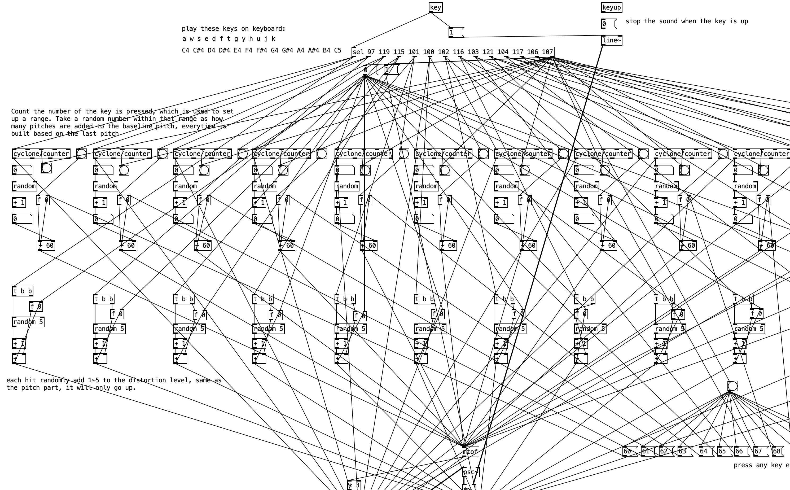

01 — Work
Projects
001
Bubbles of Interpersonal Interaction
Proximity-Based Sonification Installation
Real-time installation mapping interpersonal distance to harmonic consonance and movement speed to FM synthesis timbre. Integrates YOLOv8 body-tracking via OSC/UDP into a Max/MSP spatial audio processing chain.
★ Selected for exhibition at Tekniska museet, NAVET Student Festival 2026
002
The Root
A Sound Interpretation of Sartre's "Nausea"
A sound reinterpretation of the chestnut tree scene from Jean-Paul Sartre's Nausea, filtered through my own reading of Roquentin's confrontation with raw existence. Granular synthesis, spectral processing, and evolving pitch decay trace the passage's arc from quiet dread to an overwhelming, nauseating fullness. The accompanying visuals are procedurally generated in Python using domain-warped noise fields, echoing the text's imagery of dissolving boundaries and viscous, formless matter.
Text excerpts from Nausea (La Nausée, 1938) by Jean-Paul Sartre, translated from the French by Lloyd Alexander (New Directions Publishing). Used for non-commercial, educational and portfolio purposes only; all rights to the original text belong to the respective copyright holders.
Sound Credits
freesound.org/s/763917
License: Attribution 4.0
003
Entropy Piano
Generative Instrument in Pure Data
A generative instrument where accumulated keystroke frequency destabilises sonic output over time. One-to-many input mapping translates keystrokes into randomised pitch deviation and FM synthesis timbre modulation, creating emergent performer-instrument interaction.

004
Color-to-Sound Mapping
Real-time Chromatic Sonification in Python
Perceptual mapping between colors and sonic parameters grounded in cross-modal color-sound association research. Real-time camera-based color detection with area-proportional volume scaling and adaptive threshold for environmental variation.

005
Sounds I Carried
Multi-Object Distance Modeling in Spatial Audio
A spatial soundscape built from the everyday sounds of Taiwan — a garbage truck playing Für Elise, neighbors gathering roadside to wait for it, the horn of a traditional ice-cream cart, a loudspeaker announcing window-screen repairs door to door, and the spotted doves and cicadas that filled my childhood. I left home at eighteen. Whenever I think of Taiwan, these are the sounds that echo back.
Sound Credits
freesound.org/s/521296
License: Attribution 3.0
freesound.org/s/718917
License: Creative Commons 0